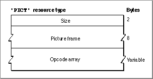

Legacy Document
Important: The information in this document is obsolete and should not be used for new development.
Important: The information in this document is obsolete and should not be used for new development.


The Picture Resource
A picture ('PICT') resource contains QuickDraw drawing instructions that can be played back using theDrawPictureprocedure.You may find it useful to store pictures in the resource fork of your application or document file. For example, when the user chooses the About command in the Apple menu for your application, you might wish to display a window containing your company's logo. Or, if yours is a page-layout application, you might want to store all the images created by the user for a document as resources in the document file.
You can use high-level tools like the ResEdit resource editor, available from APDA, to create and store images as
'PICT'resources for distribution with your files.To save a picture in a
'PICT'resource while your application is running, you should use Resource Manager routines, such asFSpOpenResFile(to open your application's resource fork),ChangedResource(to change an existing'PICT'resource),AddResource(to add a new'PICT'resource),WriteResource(to write the data to the resource), andCloseResFileandReleaseResource(to conclude saving the resource). These routines are described in the chapter "Resource Manager" in Inside Macintosh: More Macintosh Toolbox.All
'PICT'resources must be marked purgeable, and they must have resource IDs greater than 127.If you examine the compiled version of a
'PICT'resource, as represented in Figure 7-4, you find that it contains the following elements:
Figure 7-4 Structure of a compiled picture (
- The size of the resource--if the resource contains a picture created in the version 1 format. Because version 2 and extended version 2 pictures can be much larger than the 32 KB limit imposed by the size of this element, you should use the Resource Manager function
MaxSizeResource(described in Inside Macintosh: More Macintosh Toolbox) to determine the size of a picture in version 2 and extended version 2 format.- The bounding rectangle for the picture. The
DrawPictureprocedure uses this rectangle to scale the picture when you draw it into a destination rectangle of a different size.- An array of picture opcodes. A picture opcode is a number that the
DrawPictureprocedure uses to determine what object to draw or what mode to change for subsequent drawing. For debugging purposes, picture opcodes are listed in Appendix A at the back of this book. Your application generally should not read or write this picture data directly. Instead, you should use theOpenCPicture(orOpenPicture),ClosePicture, andDrawPictureroutines to process these opcodes.
'PICT') resource
To retrieve a'PICT'resource, specify its resource ID to theGetPicturefunction, described on page 7-45, which returns a handle to the picture. Listing 7-8 on page 7-19 illustrates an application-defined routine that retrieves and draws a picture stored as a resource.Appendix A, "Picture Opcodes," shows examples of disassembled picture resources.